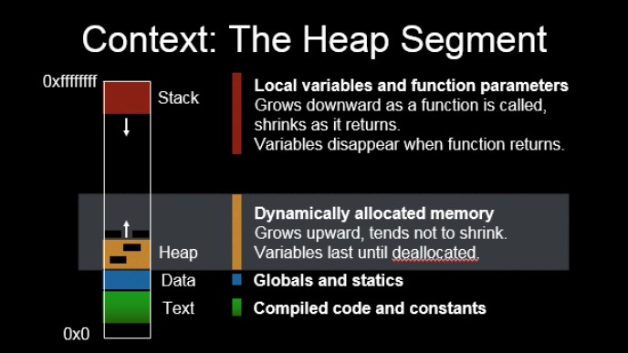

Hidden files begin with a period. A period represents the current directory. To see hidden files, use this command:
`ls -al`.
total 61
drwxr-xr-x. 8 sprakash users 2048 Jun 2 21:26 .
drwxr-xr-x. 7 root mail 2048 May 25 2021 ..
lrwxr-xr-x. 1 sprakash users 58 May 31 21:41 216 -> /afs/glue/class/summer12022/cmsc/216/0101/student/sprakash
lrwxr-xr-x. 1 sprakash users 48 May 31 21:41 216public -> /afs/glue/class/summer12022/cmsc/216/0101/public
-rw-r--r--. 1 sprakash users 282 May 31 22:05 .aliases
-rw-r--r--. 1 sprakash users 178 May 25 2021 .bash_aliases
-rw-r--r--. 1 sprakash users 573 May 25 2021 .bash_environment
-r--r--r--. 1 sprakash users 1538 May 25 2021 .bash_logout
-rw-r--r--. 1 sprakash users 256 May 25 2021 .bash_logout.mine
-rw-r--r--. 1 sprakash users 303 May 25 2021 .bash_path
-r--r--r--. 1 sprakash users 2387 May 25 2021 .bashrc
-rw-r--r--. 1 sprakash users 353 May 25 2021 .bashrc.mine
-r--r--r--. 1 sprakash users 2352 May 25 2021 .cshrc
-rw-r--r--. 1 sprakash users 420 May 31 21:41 .cshrc.mine
-rw-r--r--. 1 sprakash users 1664 May 25 2021 .dashmenurc
drwx------. 3 sprakash users 2048 Jun 2 01:57 .dbus
-rw-r--r--. 1 sprakash users 498 May 25 2021 .emacs
drwx------. 3 sprakash users 2048 Jun 1 15:49 .emacs.d
-rw-r--r--. 1 sprakash users 534 May 25 2021 .environment
-rw-r--r--. 1 sprakash users 95 May 25 2021 .fvwm2rc
-rw-------. 1 sprakash users 613 Jun 2 21:26 .history
-rw-r--r--. 1 sprakash users 0 Jun 2 21:26 .hushlogin
drwxr-xr-x. 3 sprakash users 2048 Mar 16 2006 .kde
-rw-r--r--. 1 sprakash users 86 May 25 2021 .kermrc
drwxr-xr-x. 3 sprakash users 2048 May 31 11:34 .local
-r--r--r--. 1 sprakash users 1761 May 25 2021 .login
-r--r--r--. 1 sprakash users 1524 May 25 2021 .logout
-rw-r--r--. 1 sprakash users 258 May 25 2021 .logout.mine
drwx------. 2 sprakash users 2048 May 25 2021 Mail
-rw-r--r--. 1 sprakash users 11 May 25 2021 .mh_profile
-rw-r--r--. 1 sprakash users 370 May 31 21:41 .path
-r--r--r--. 1 sprakash users 1757 May 25 2021 .profile
-rw-r--r--. 1 sprakash users 118 May 25 2021 .reqrc
drwx------. 2 sprakash users 2048 Jun 2 21:25 .ssh
-rwxr-xr-x. 1 sprakash users 835 May 25 2021 .startup.X
-rw-r--r--. 1 sprakash users 613 May 25 2021 .twm.menus
-rw-r--r--. 1 sprakash users 1609 May 25 2021 .twmrc
-rw-------. 1 sprakash users 912 Jun 2 02:39 .viminfo
-rw-r--r--. 1 sprakash users 954 May 17 2006 welcome
-rw-------. 1 sprakash users 481 Jun 2 21:25 .Xauthority
-rwxr-xr-x. 1 sprakash users 1269 May 25 2021 .xinitrc
-rwxr-xr-x. 1 sprakash users 132 May 25 2021 .xserverrc
lrwxr-xr-x. 1 sprakash users 8 May 25 2021 .xsession -> .xinitrc
The command pwd shows the path of where you are.
Let's create a sample file p1.c such that:
#include <stdio.h>
int main(void) {
int x, y;
scanf("%d%d", &x, &y);
printf("The values are %d %d\n", x, y);
return 0;
}
We can compile this program using gcc and run it such that this will be our output:
10 20
The values are 10 20
Let's try to change the input from the user to a file. To do this, lets create a file using the command
vi data.txt
Here, we will put this data in:
10 20
So now, the file data.txt contains the text 10 20 that represents our data.
To run our program using this file as our input, we can run this command:
a.out < data.txt
When we do this, our terminal shows:
grace7:~/216: a.out < data.txt
The values are 10 20
Notice I left in the command line to show everything I've done for this run.
What we have done here is called input redirection.
We can also redirect our ouptut from the CLI to a file. To do this, we could run the program like this:
grace7:~/216: a.out < data.txt > results.txt
This way, the program's input is data.txt, and the output goes to a file called results.txt. Using ls, we can see that the file results.txt was created.
When we run the command
cat results.txt
we will see the output of our program in the results.txt file:
grace7:~/216: cat results.txt
The values are 10 20
Note: before we run this program againl, we must remove the results.txt file using this command:
rm results.txt
draw_figuresIn 216public/exercises/draw_figures/, we see many files.
grace7:~/216public/exercises/draw_figures: ls
colors_in_c.c public02.output public04.output public06.output
public01.in public03.in public05.in
public01.output public03.output public05.output
public02.in public04.in public06.in
These are the files that show the inputs and exptected outputs of our program.
When we work on this exercise, we can use input and output redirection to run out program like this:
a.out < public01.in > t
where t is our output file.
diffIn our environment, there is a command which can compare two files. Suppose we want to see if a file r is the same as a file public01.out. We can run the command:
diff public01.output r
If there is no output from this line, then the two files are identical. Otherwise, it will tell you what the difference is.
This command will help us to see if the output from our program matches the expected output as shown in files such as public01.output and public02.output.
In MobaXTerm, you can transfer files to and from Grace by using the SFTP feature. Do this by:
Sessions dropdown in the menu barNew SessionSFTPMac Users can use transfer files using another protocol.'
scp (secure copy)I use scp to copy files through SSH on different machines. To do this on Grace, open a terminal on your local machine. Enter a command that follows this structure:
scp -P 22 sprakash@grace.umd.edu:~/216/p1.c ./Desktop/p1.c
obiously, change my username to yours, the path of the file to the path of your file, the name of the file to the name of your file, and the path for where you want the file to wherever you wish for it to be.
Alternatively, you can open your local terminal in wherever you want the file to go. Then you don't need to write the path for where you want the file to go, only the file name.
For example, this also works:
C:\Users\Sashu\Desktop>scp -P 22 sprakash@grace.umd.edu:~/216/p1.c p1.c
Copied from C-Language-III.pdf slides
Copied from C-Language-III.pdf slides
error.cThis example code shows why incremental code development is important.
// Mary
#include <stdio.h>
int main() {
printf("Done\n");
return 0;
}
When we compile this code using gcc, it outputs several large error messages. It's difficult to comprehend all this, so if we made sure to test our program at each increment of development, we can find the cause of problems easier, since not much will have changed.
Copied from C-Language-III.pdf slides
i after each statement? What does each statement evaluate to?i = 1, 2, 3, 4;
i = (1, 2, 3, 4);
comma_op.cTake a look at this code which shows what the comma operator does:
#include <stdio.h>
int main() {
int i, j = 2, k = 3;
i = (1, ++j, ++k);
printf("i: %d\n", i);
printf("j: %d\n", j);
printf("k: %d\n", k);
/* Resetting j, k */
printf("\nWithout parentheses\n");
j = 2;
k = 3;
i = 1, ++j, ++k;
printf("i: %d\n", i);
printf("j: %d\n", j);
printf("k: %d\n", k);
return 0;
}
As you can see, the line
i = (1, ++j, ++k);
Has three instructions, separated by commas, and this is somehow evaluated to a value that is given to i. The comma operator returns the value of the last expression, in this case, ++k. So, i will have whatever value results from ++k.
On the other hand, when used without parenthasis such as
i = 1, ++j, ++k;
i is given the value of 1, and the other statements also run. The values of those statements are useless in that line because i is not affected by them.
Copied from C-Language-III.pdf slides

global.cLet's take a look at this example code:
#include <stdio.h>
/* Notice the global variables convention (g_) */
int g_years = 10; /* What if we don't initialize it? */
void process() {
/* Following printf will not compile */
/* printf("g_salary in process() %f\n", g_salary); */
g_years++;
}
double g_salary = 3000.00; /* Visible from this point on */
int main() {
printf("g_years before process() call: %d\n", g_years);
process();
printf("g_years after process() call: %d\n", g_years);
printf("g_salary in main() %f\n", g_salary);
return 0;
}
A global variable is visible during the entire duration of the program, once it is declared. Notice g_years is a global variable, and it's named using g_ by convention.
process() tried to access g_salary because global variables are only visible from their point of declaration onwards.0, whereas the default value for a local variable is garbage.Copied from C-Language-III.pdf slides
int example(int i) {
int j = 5;
return i + j;
}
static.c#include <stdio.h>
void compute_automatic(int x);
void compute_static(int x);
void compute_automatic(int x) {
int value = 100;
printf("(automatic) x: %d, value: %d, sum: %d \n", x, value, value + x);
++value;
}
void compute_static(int x) {
/* Initialization to a 100 will take place only once, when the */
/* function is called the first time */
static int value = 100; /* What would happen if we don't initialize it? */
printf("(static) x: %d, value: %d, sum: %d \n", x, value, value + x);
++value;
}
int main() {
compute_automatic(1);
compute_automatic(1); /* calling function again */
compute_static(1);
compute_static(1); /* calling function again */
return 0;
}
It's important to note that the line
static int value = 100;
will only run once. So, if the function compute_static is called a second time, the value of value will be 101, not 101.
Copied from C-Language-III.pdf slides
foo() in file1.c can cause problems if there's a function named foo() in file2.cfunctionsLet's take a look at the directory functions in linkage_example:
grace10:~/<2>Week01/C-Language-III-Code/linkage_example/functions: ls
main.c README.txt support.c
Here, let's cat README.txt to see its contents. Reading README files can be beneficial because they are meant to be read before the use of a software.
grace10:~/<2>Week01/C-Language-III-Code/linkage_example/functions: cat README.txt
To compile:
gcc main.c support.c
This README file gives some information on how to compile the code.
Before we do so, lets take a look at the file support.c:
grace10:~/<2>Week01/C-Language-III-Code/linkage_example/functions: cat support.c
#include <stdio.h>
/*
* 1. What happens if you add static at the beginning?
* 2. What happens if you add extern?
*
*/
/* Function definition */
/* Prints sum of value from 1 up to limit */
void print_sum(int limit) {
int sum = 0, k = 1;
while (k <= limit) {
sum += k;
k++;
}
printf("The sum of %d is %d\n", limit, sum);
}
This file has a function print_sum which prints a the sum of values from 1 to a limit.
Now, lets take a look at the file main.c.
main.c for the purposes of this examplegrace10:~/<2>Week01/C-Language-III-Code/linkage_example/functions: cat main.c
#include <stdio.h>
/*
* 1. What happens if you add static at the beginning of the prototype?
* 2. What happens if you add extern at the beginning of the prototype?
* 3. What happens if you remove the prototype?
*/
void print_sum(int limit); /* Prototype */
int main() {
print_sum(4);
return 0;
}
This file makes use of the print_sum funciton defined in the other file.
To make this work, we must compile using the information provided in the README.txt file.
gcc main.c support.c
Then, if we run the outputted a.out, we'll see that we get this output:
The sum of 4 is 10
The program worked as expected. What did gcc do?
gcc is not also a compiler, but also a linker. In Nelson's terms, it takes all the ingredients and stirs them in the pot.printf() if it is needed.Let's continue looking at the file main.c.
void print_sum( int limit); /* Prototype */
print_sum that has this signature.support.c can be accessed by main.c.Suppose, in support.c, we added the keyword static to print_sum such that support.c looks something like this:
#include <stdio.h>
static void print_sum(int limit) {
int sum = 0, k = 1;
while (k <= limit) {
sum += k;
k++;
}
printf("The sum of %d is %d\n", limit, sum);
}
Now, if we compile the code, we get an error:
gcc main.c support.c
support.c:11:13: warning: `print_sum` defined but not used [-Wunused-function]
static void print_sum( int limit) {
^
/tmp/ccAjuXHRs.o: In function `main`:
/afs/glue.umd.edu/.../functions/main.c:12: undefined reference to 'print_sum'
collect2: error: ld returned 1 exit status
As we can see, main is calling print_sum but there is no print_sum that is accessible by it.
To make print_sum accessible externally, we give it the default keyword extern such that support.c looks like this:
#include <stdio.h>
extern void print_sum(int limit) {
int sum = 0, k = 1;
while (k <= limit) {
sum += k;
k++;
}
printf("The sum of %d is %d\n", limit, sum);
}
It's important to note that the extern keyword is the default visibility assigned to functions, so there is no need to write it at all in the signature of a function.
With this or the default signature, the code compiles and runs properly.
The use of static functions in C is similar to the use of private functions in Java, where we need to use functions as supports without them being visible/useable by users.
variablesSimilar to linkages in functions, we can address linkages in the context of variables
Let's take a look at the variables directory in linkage_example:
grace10:~/<2>Week01/C-Language-III-Code/linkage_example/variables: ls
main.c README.txt support.c
Let's take a look at the file called main.c
grace10:~/<2>Week01/C-Language-III-Code/linkage_example/variables: cat main.c
#include <stdio.h>
/*
* 1. What happens if we remove extern?
* 2. What happens if we assign a value to g_computers ?
* 3. What happens if we assign a value to g_computers having a extern?
* 4. What if we remove the extern and assign a value to g_computers?
*/
/* Declaration */
extern int g_computers;
/* Function prototype */
void process();
int main() {
printf("Before calling process %d\n", g_computers);
process();
printf("After calling process %d\n", g_computers);
return 0;
}
The line:
extern int g_comptuers;
looks like a global variable, but to see what it's doing, let's wee what the program is doing.
The program has a function called process(), which isn't in main.c. It's in support.c, so let's take a look at that too:
grace10:~/<2>Week01/C-Language-III-Code/linkage_example/variables: cat support.c
#include <stdio.h>
/* When you assign a value you define the variable */
int g_computers = 200;
void process() {
g_computers++;
}
Here, we see that the function increases the global variable g_computers by 1 everytime it is called.
In C, when we give a variable a value, we are "defining" it, which means we allocate space in memory for it.
The terms
are different.
Let's revisit the main.c code. We can see that the lines
/* Declaration */
extern int g_computers;
Declare there to be an int variable called g_computers. However, the word extern makes this declaration such that the variable is defined elsewhere - in this case, in support.c. The linker will take care of this linkage.
Suppose we changed support.c and added static to the defined variable, g_computers. The file would look something like this:
#include <stdio.h>
static int g_computers = 200;
void process() {
g_computers++;
}
And now, the code will not compile. The compiler will throw an error such as this:
gcc *.c
/tmp/...: In function `main`:
/afs/glue.umd.edu/.../variables/main.c:19: undefined reference to ;'g_computers'
collect2: error: ld returned 1 exit status
Let's see what this error message means.
g_computers.
extern declaration, it has not been defined.ld is the linker. Since it reterned an exit status, we can see that it was unable to complete its linkages.Some things to note:
int g_computers = 200;
int g_computers;
extern fromextern int g_computers;
extern is used by default even if it's not added there by the programmer.main.c to have/* Declaration */
int g_computers = 10;
int g_computer = 20;
gcc *.c
/tmp/...:(.data+0x0): multiple definition of `g_computers`
/tmp/...: ... : first defined here
collect2: errpr: ld retured 1 exit status
"This class is brought to you by Starbucks" - Nelson.
Here are some interesting Unix commands that can be used.
fingerThe command finger lets you finger someone on a server such that you can get some information about their user.
For example, if I were to finger myself:
grace10:~: finger sprakash
Login: sprakash Name: Sashwath Prakash
Directory: /afs/glue.umd.edu/home/glue/s/p/sprakash/home Shell: /bin/tcsh
On since Fri Jun 10 02:56 (EDT) on pts/0 from [REDACTED IP]
7 seconds idle
No mail.
No Plan.
psThe ps, or process command, lets you see what processes someone is running. For example, you can use this with the flags -fu to see what someone is doing:
grace10:~: ps -fu sprakash
UID PID PPID C STIME TTY TIME CMD
sprakash 7052 7035 0 02:56 ? 00:00:00 sshd: sprakash@pts/0
sprakash 7057 7052 0 02:56 pts/0 00:00:00 -tcsh
sprakash 22405 7057 0 04:17 pts/0 00:00:00 ps -fu sprakash
To see all the processes on the system, we can use
grace10:~: ps -e
PID TTY TIME CMD
1 ? 02:55:24 systemd
2 ? 00:00:30 kthreadd
4 ? 00:00:00 kworker/0:0H
6 ? 00:03:16 ksoftirqd/0
.
.
.
who am iThis command tells you who you are
grace10:~: who am i
sprakash pts/0 2022-06-10 02:56 (REDACTED IP)
whoThis command tells you who is on the same machine as you
grace10:~: who
sprakash pts/0 2022-06-10 02:56 (REDACTED IP)
ishi pts/1 2022-06-09 23:27 (REDACTED IP)
calThis command gives you a nice looking calendar
grace10:~: cal
June 2022
Su Mo Tu We Th Fr Sa
1 2 3 4
5 6 7 8 9 '10' 11
12 13 14 15 16 17 18
19 20 21 22 23 24 25
26 27 28 29 30
But the date is somehow highlighted on an ssh client.
dateThis command tells you the date
grace10:~: date
Fri Jun 10 04:24:46 EDT 2022pep
mesg yLets you enable your messages
write $userLets you write to a user by replacigng $user with their username.
Back to learning about C
#include <stdio.h>
int main () {
enum Suit {
SPADES, HEARTS,
DIAMONDS = 42, CLUBS
};
enum Suit suit1, suit2;
suit1 = SPADES;
suit2 = CLUBS;
if (suit1 < suit2)
printf("Spades are furst.\n");
else
printf("Clubs are first.\n");
printf("Spades = %d, Clubs = %d\n", suit1, suit2);
return 0;
}
You'll see that SPADES = 1, and CLUBS = 43.
rvalue is anything that can appear on the right side of an assignment statement
lvalue is anything that can appear on the left side of an assignment statement
float f = 3.45;
int x = (int)f;
char and short is converted to int, then it is compared to the other.